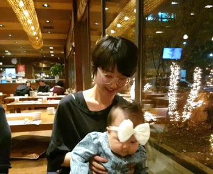

의욕충만했다가 인터넷 검색해보니 교정이 끝난후에 교정유지장치를 거의 평생 끼고 있어야한다는 글을 보고 급 브레이크가 걸렸습니다 ^^;;
대충 2년 교정기간 -> 유지장치 1-2년은 밥먹을대 제외하고 계속 끼고있고 -> 이후에는 잠잘때만 낀다
란 후기가 많은데 경험있으신분들 조언 부탁드려요 OTL
평생 잠잘때 착용해야 하는건가요 ;ㅂ;
치아 발치하지 않고 교정하신 분들은 괜찮은데 발치하는 경우는 평생 껴야한다고 그러고
정보의 홍수속에 정신을 못차리고 있습니다 ^^;;;;;
20대 초반부터 엄마님은 교정하라고 강권했지만
그때는 내 치아가 굉장히 멀쩡한줄 알았고 ㅋㅋㅋㅋㅋㅋㅋㅋ
계속 해외서 떠돌이 생활하다보니 기회가 없었네욤;;
치과가서 상담하는데
나: 전 제 치아가 멀쩡한거 같은데 엄마가 자꾸 교정하라고 해서....
의사: (빵터짐) ㅋㅋㅋㅋㅋ 아니 교정은 대부분 본인이 원해서 오는데 등떠밀려 오는 사람은 첨 보네요
(엑스라이 촬영하고 본도 뜬 후)
나: 어때요? 심각한가요?
의사: ..........심각한데요 (계속 웃음) 아래위 2개씩 4개 발치하셔야 해요
나:
ㅋㅋㅋㅋㅋ 제길;;
지금생각해보면 엄마님은 고등학교 졸업하자마자 저에게 굉장한(?) 제안을 많이 해 주셨는데
(교정해라 / 워킹,자세교정 학원가라 / 메이크업 클래스 가라 - 등등)
스무살의 나능 그딴거 필요없다고 뻥 차버리는 (지금생각해보면) 매우 몹쓸짓을 해버렸네요;;;
왜그랬어 과거의 나 ;ㅂ;
역시 부모님 말 잘 들으면 자다가도 떡이 생깁니다 ㅋㅋㅋㅋㅋㅋㅋㅋ

사진은 주말 가족모임 저녁에서 혼신의 힘을 다해 동생곰 딸에게 둥가둥가를 시전해주고 있는 모습 ㅋㅋㅋ
애기 볼살 넘 귀여워욤 ㅋㅋㅋㅋ 햄스터 같아 ㅋㅋㅋㅋㅋㅋ
아직 혼자 서지못하는데 눕혀놓으면 매우 싫어합니다 ㅋㅋㅋㅋ 세워서 계속 움직여줘야함
평소 사진찍으면 굉장히 뚱하게 나오고 성질나빠 보이는데 (플러스 메이크업 하면 이 성질나쁨이 파워업이 되능 느낌;;)
이 사진은 상냥해 보여서 맘에듭니다 ㅋㅋㅋㅋㅋㅋㅋㅋㅋ